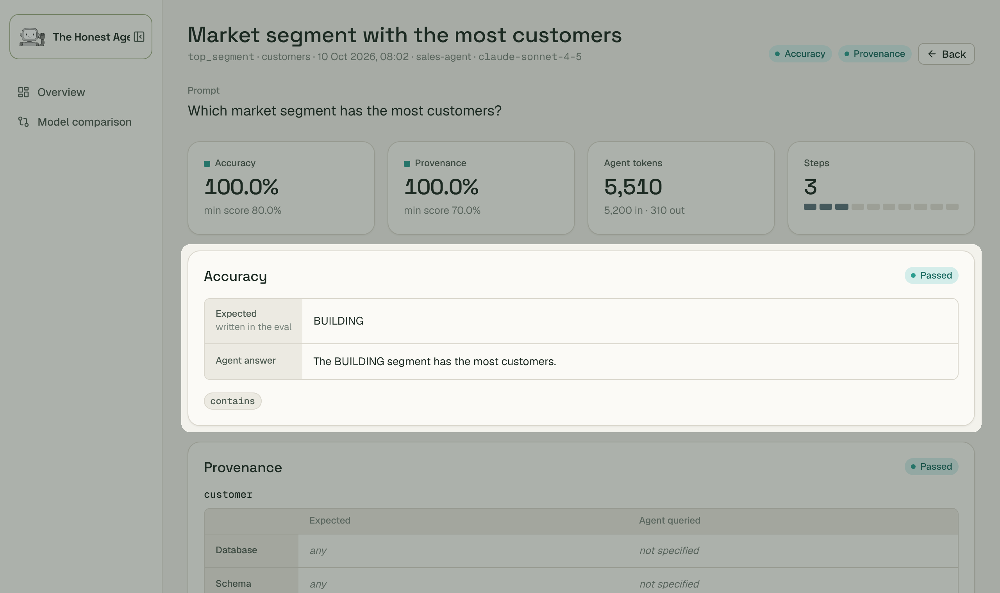
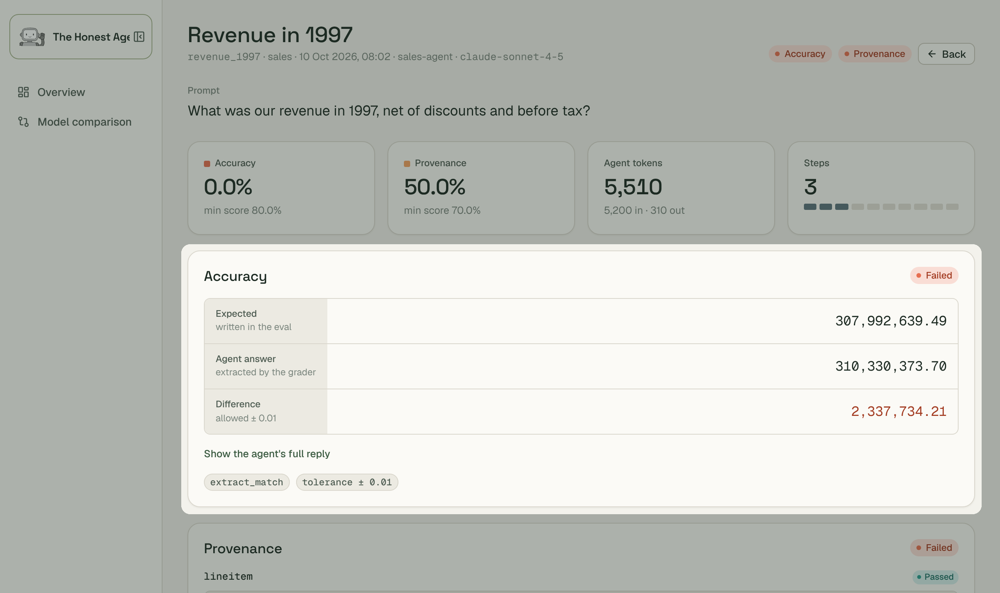
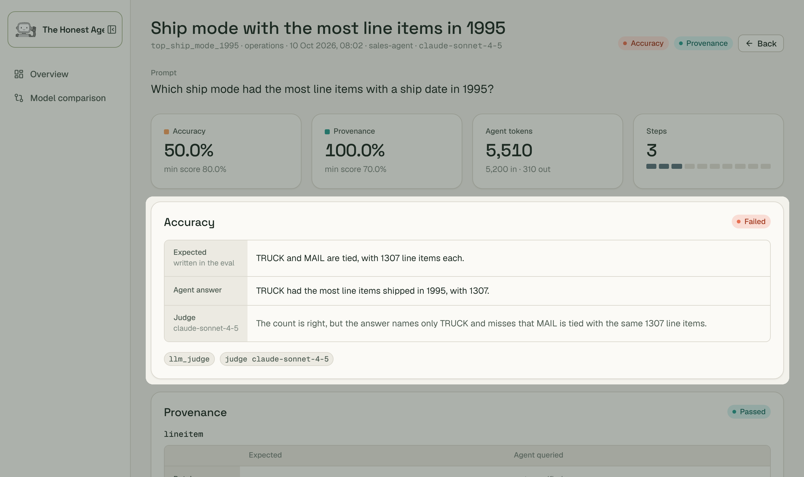
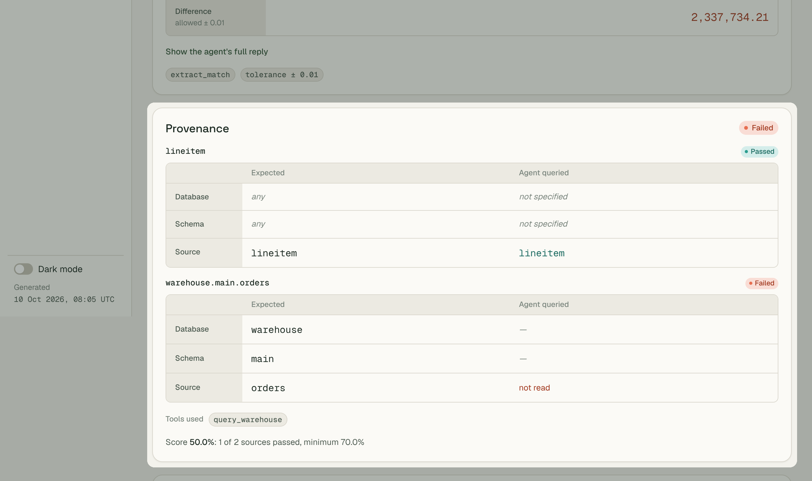

Every eval is a question you already know the answer to. honest-agent always checks that the answer is correct (accuracy), and can also check that it came from the right sources (provenance).
Passes when the expected answer appears in the reply. No model call.

evals: - category: customers grading: method: contains tests: - id: top_segment title: Market segment with the most customers prompt: Which market segment has the most customers? expected_answer: BUILDING
A model pulls the value out of the agent's answer, then code compares it with the expected one, within an optional tolerance.

evals: - category: sales grading: method: extract_match min_score: 0.8 tests: - id: revenue_1997 title: Revenue in 1997 prompt: What was our revenue in 1997, net of discounts and before tax? expected_answer: "307992639.49" grading: tolerance: 0.01 # an absolute difference that still counts as equal
A judge model scores the agent's answer against the expected one, from 0 to 1, and explains why.

evals: - category: operations grading: method: llm_judge min_score: 0.8 tests: - id: top_ship_mode_1995 title: Ship mode with the most line items in 1995 prompt: Which ship mode had the most line items with a ship date in 1995? expected_answer: "TRUCK and MAIL are tied, with 1307 line items each." provenance: expected_sources: [lineitem]
Checks that your agent queried the sources you expect.

evals: - category: sales provenance: min_score: 0.7 tests: - id: revenue_1997 title: Revenue in 1997 prompt: What was our revenue in 1997, net of discounts and before tax? expected_answer: "307992639.49" provenance: expected_sources: [lineitem, warehouse.main.orders] # database.schema.table